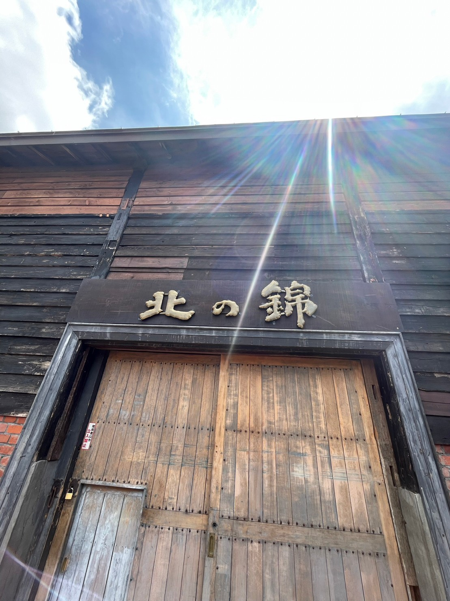
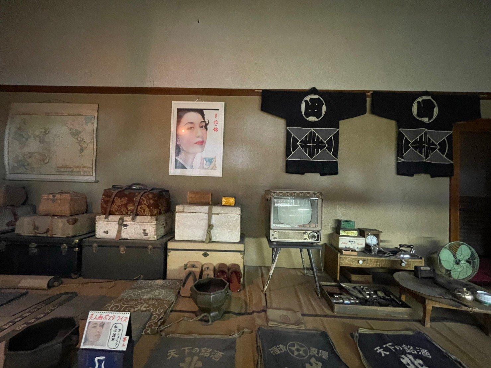
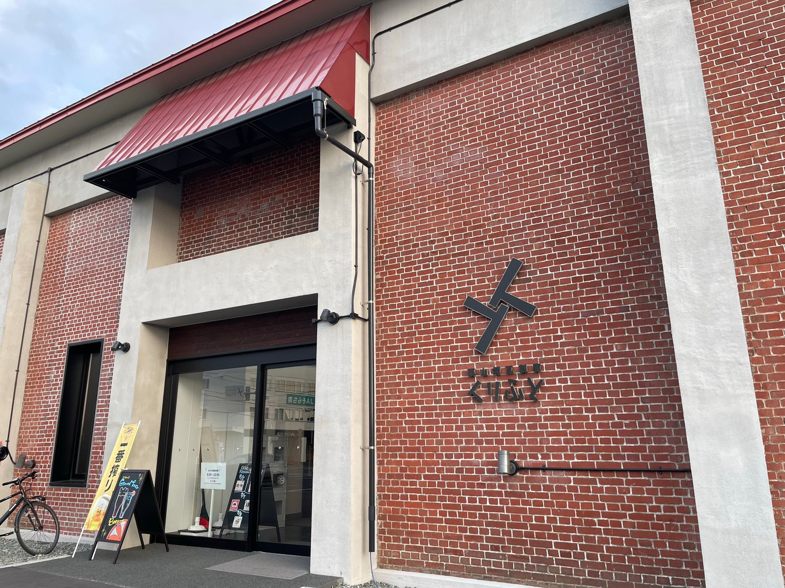

FABLAB KURIYAMA｜まちの課題をものづくりで解決する
2泊3日のサマーチャレンジin栗山町
1日目｜オリエンテーション
7月7日（金）
11：30 新千歳空港集合
11：30～12：30 栗山町まで移動
12：00～13：30 昼食
13：30～15：30 町内名所めぐり
15：30～16：00 宿泊先到着・荷おろし・移動
16：00～19：00 オリエンテーション
19：00～21：30 まちの人たちとの交流会
21：00 自由時間
今回、北海道のFablab kuriyamaでのものづくりを通して問題解決に向けたプロジェクトに参加してきました。

町内名所めぐり
・restaurant＆cafe pont
※実際にFablab kuriyamaで作製された看板
・北の錦

小林酒造の酒づくりについてお話を伺いました。
道産米でつくりことに力を入れていて、代々受け継がれている。昔の楽しみと言えば、「お酒を飲むこと（楽しむ）」という文化があった。
中にはお酒の瓶などが飾られていたり、当時酒造りで使われていたものが残っていた。酒粕でつくられた、守り神を門につるす文化もあるようでした。実際に売られているお酒のパッケージデザインを新しくして現在の若い世代の人でも楽しめるように工夫していた。
現在では建物の老朽化が問題として挙げられている。
・栗山ダム
・オオムラサキ記念館

栗山の町の特徴
自然豊な町で海や山、広大な森林がとても魅力的
オリエンテーション
くりふとに到着

★事前にヒヤリングした課題説明
１，夜、くるふとの入口の明かりに集まった、虫が風除気→館内に入ってくること
２，館内の空気の流れが悪く、暑い
３，入館者を手持ち数取器でカウントし、それをExcelに1時間ごとに入力するのを忘れてしまうことが多い
４，屋外のスポットライトをつけ忘れてしまう
５，館内温度を「８：３０」「１２：００」「１７：００」ごとにExcelに入力するのを忘れてしまうことが多い
６，トイレの石鹸がなくなったことを知らせるアラーム（点滅）が分かりにくい
７，（六角形の）椅子がすべる
８，屋外の専用ごみステーションを勝手に利用されてしまう
館内設置アンケートから
１，ベビースペースがない
２，個室スペースがない
３，荷物を入れるかごがない
４，館内が少し暑い
実際の問題がある場所の写真↓↓↓↓↓↓
私たちが選んだ課題は、
１，夜、くるふとの入口の明かりに集まった、虫が風除気→館内に入ってくること
７，（六角形の）椅子がすべる
８，屋外の専用ごみステーションを勝手に利用されて
１，ベビースペースがない
２，個室スペースがない
３，荷物を入れるかごがない
この中で、アイディアをイメージしてみることに、、、
まちの人たちとの交流会